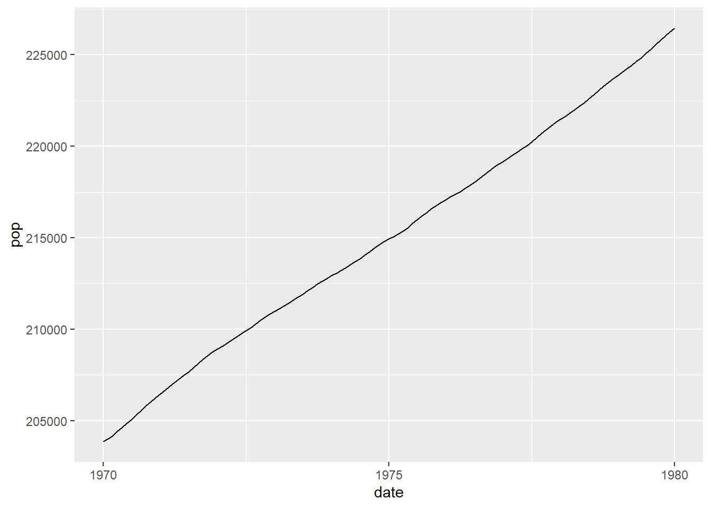
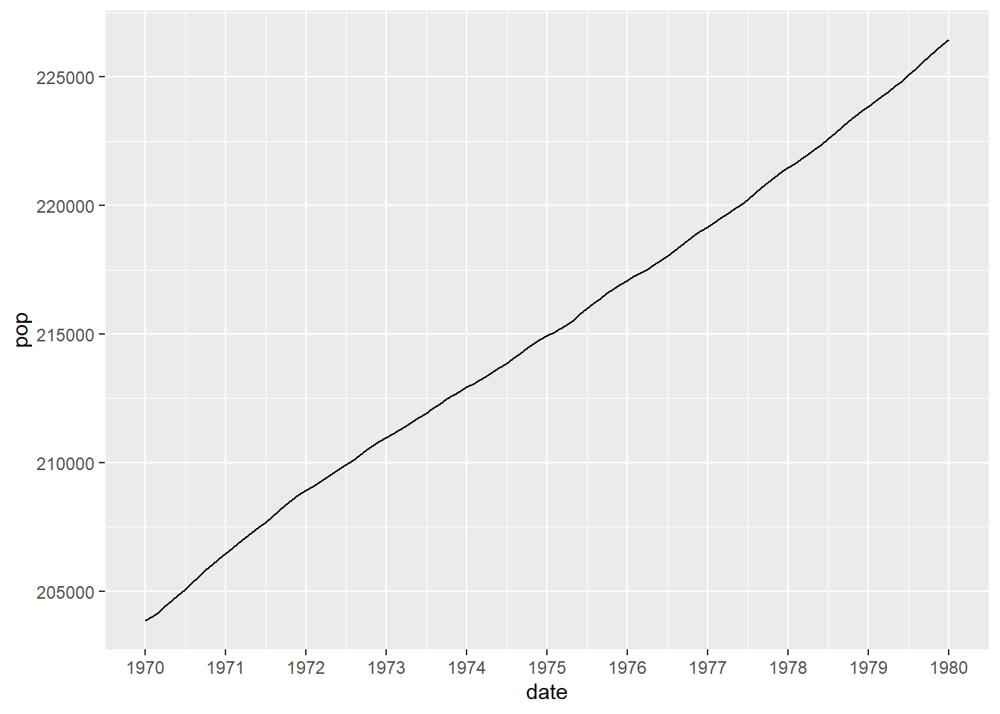
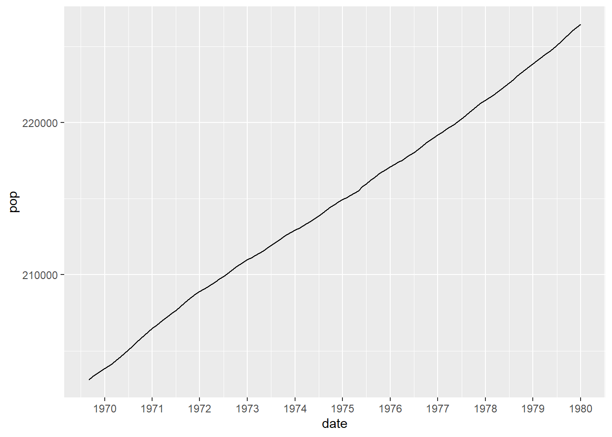
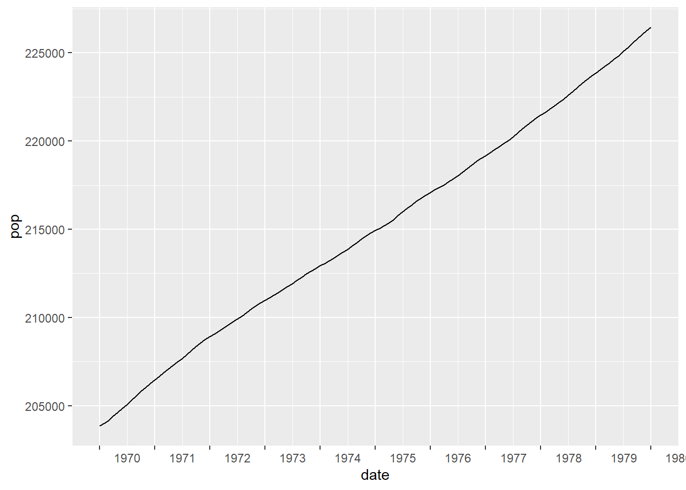
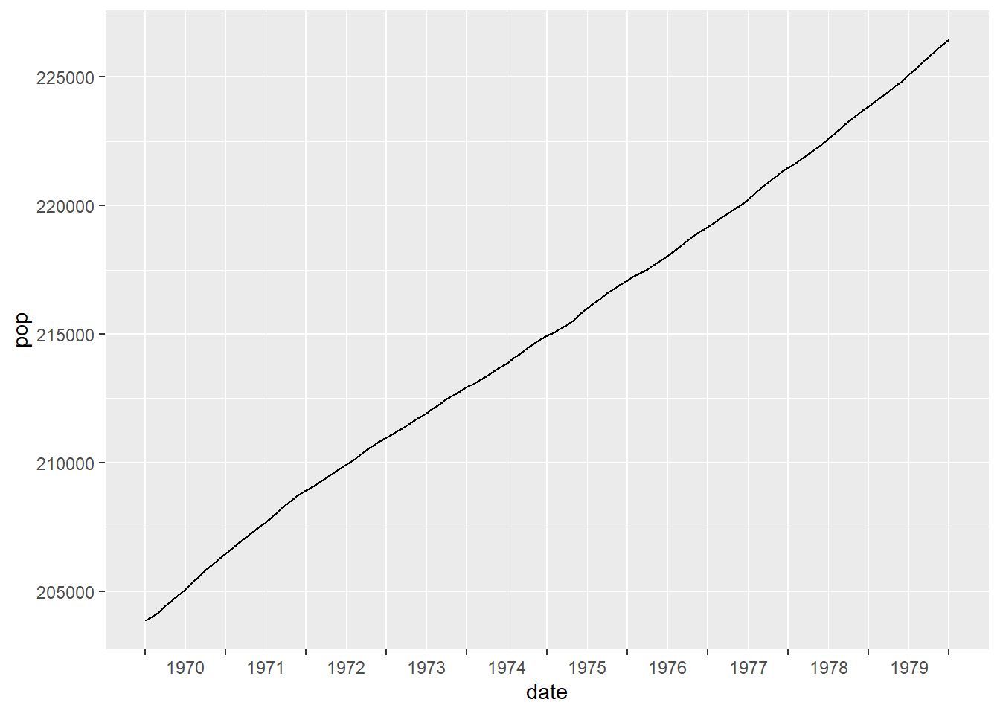

A wee while ago I needed to tweak some plots. The plots are exported as jpegs and are always results over the last ten years. The change I needed to make was to move the default labels produced by ggplot2.
To demonstrate, let’s look at an example by reducing the economics dataset to 10 years of data and producing a quick plot.
library(tidyverse)
library(lubridate)
# reduce the data
data_to_plot <- filter(economics,
between(date, as.Date("1970-01-01"),
as.Date("1980-01-01")))
ggplot(data_to_plot, aes(x = date, y = pop)) +
geom_line() 
We can neaten this up a little by using the lubridate package and adding tickmarks for every year.
library(lubridate)
data_to_plot <- filter(economics,
between(date, make_date(1970),
make_date(1980)))
ggplot(data_to_plot, aes(x = date, y = pop)) +
geom_line() +
scale_x_date(date_breaks = "1 year", date_labels = "%Y")
This is where we can start from. The next step is to make the change I need to in the plots. By default ggplot2 puts a tickmark at the start of the year and this could be misinterpreted, due to the single tickmark, as the middle of the year. With this particular graph it might be unlikely as the data starts directly on the first tickmark but a small change could make this possible misinterpretation more likely.
data_to_plot <- filter(economics,
between(date, make_date(1969, 9),
make_date(1980)))
ggplot(data_to_plot, aes(x = date, y = pop)) +
geom_line() +
scale_x_date(date_breaks = "1 year", date_labels = "%Y")
The change I made was to move the labels of the tickmarks so that they sit between the tickmarks themselves - essentially putting them in line with the minor tickmarks, rather than the major tickmarks. There are packages that allow the minor tickmarks to be labelled but I wanted to avoid using additional packages.
One advantage that I had was that the plots produced are always a specific size and so I could use a ggplot2 command to accomplish what I was looking for. A quick example would be
data_to_plot <- filter(economics,
between(date, make_date(1970),
make_date(1980)))
ggplot(data_to_plot,
aes(x = date, y = pop)) +
geom_line() +
scale_x_date(date_breaks = "1 year", date_labels = "%Y") +
theme(axis.text.x = element_text(hjust = -0.55))
The final step is to tweak the number of labels by removing the final one. This also means that we can’t use the automatic labelling and it is easiest to add our own.
data_to_plot <- filter(economics,
between(date, make_date(1970),
make_date(1980)))
years_used <- unique(year(data_to_plot$date))
year_labels <- c(years_used[-length(years_used)], "")
ggplot(data_to_plot,
aes(x = date, y = pop)) +
geom_line() +
scale_x_date(breaks = make_date(years_used), labels = year_labels) +
theme(axis.text.x = element_text(hjust = -0.55))
I was interested that this could be achieved really quite easily, without resorting to additional packages. However, I don’t think that this is the best method if the size of the plots was going to change or be dependent on user choice. I found that I needed to tweak the value given to hjust = to get it to look right. In my case this isn’t an issue because the images are exported to separate files.